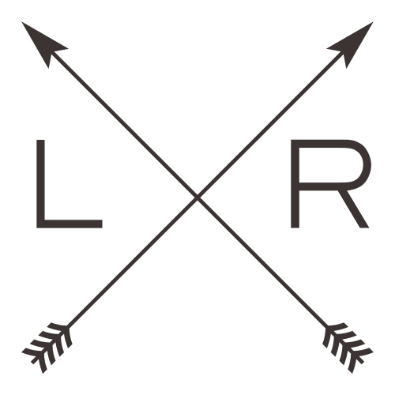

Luna and Rafael
15/11/2026 | 15:00
Meu amor,
Fiz este cantinho de brincadeira, com algumas ideias do que a gente pode fazer hoje. A regra é uma só: quem decide é você. Vale estudar, vale ficar de bobeira em casa, vale sair por aí.
Hoje você chega em São Paulo para continuar a temporada de provas, e eu queria que fosse um dia bom e especial, seja qual for o plano. Até porque, com você, qualquer plano já é bom.
E não é todo dia que se completam 5 anos, 5 meses e 24 dias de namoro. Vamos comemorar.
Amo muito você.
Toque em um filme para saber mais.
Dados e imagens dos filmes: TMDB.
Toque em um filme para saber mais.
Dados e imagens dos filmes: TMDB.